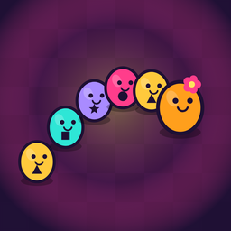

Shimmy Line: Conga Dance-Off
Lead a conga line around the dance floor, shimmy on the beat and cut in on rival lines.
Support
Found a bug or have an idea? Email cpdigicomm@gmail.com and include your iPhone model and iOS version.
How to play
Drag anywhere to steer your leader, like a joystick. Touch dancers to add them to the end of your line. Tap the floor or the SHIMMY button to dash: on the beat it's free, off the beat your last dancer wanders off.
Bump into the side of another line and the back half of yours scatters. Make a rival bump into you and grab their dancers. When the DJ calls a color, those dancers count double.
Prefer buttons? Turn on Two buttons steering in Settings.
FAQ
Does it need internet?
No. The whole game plays offline. Ads only load when you happen to be online.
I can't hear the music.
Check that your iPhone's silent switch is off and Music is on in Settings. The beat also shows on the floor lights and the ring around your leader.
How do I open the next night?
Earn at least one star (reach the target line length) on the night before it.
The flashing lights bother me.
Turn on Calm lights in Settings to stop the floor and bulbs from flashing.
Will I lose progress if I delete the app?
Yes. Progress is stored only on your device.